TOUCH
или как верстать под "мобилки"
Разрешения экранов
Размеры экранов
Pixels
device pixel
— привычные нам пиксели: самые маленькие элементы любого дисплея, каждый из которых имеет свой цвет и яркость.
CSS pixels
— абстрактная величина, используемая браузерами для точного отображения контента на страницах, вне зависимости от экрана
Плотность пикселей
PPI (Pixels Per Inch) - пиксели на дюйм.
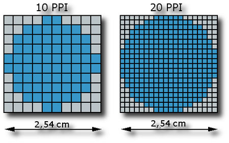Дисплеи с повышенной плотностью
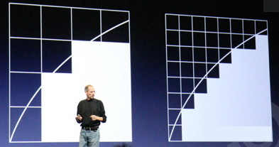Retina display
— общее маркетинговое название ЖК-дисплеев, отличающихся достаточной плотностью пикселей, чтобы человеческий глаз не смог заметить, что изображение состоит из них.
Retina display
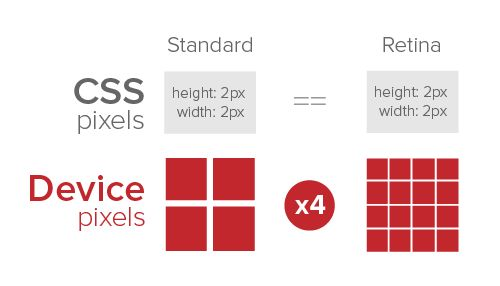Отличия
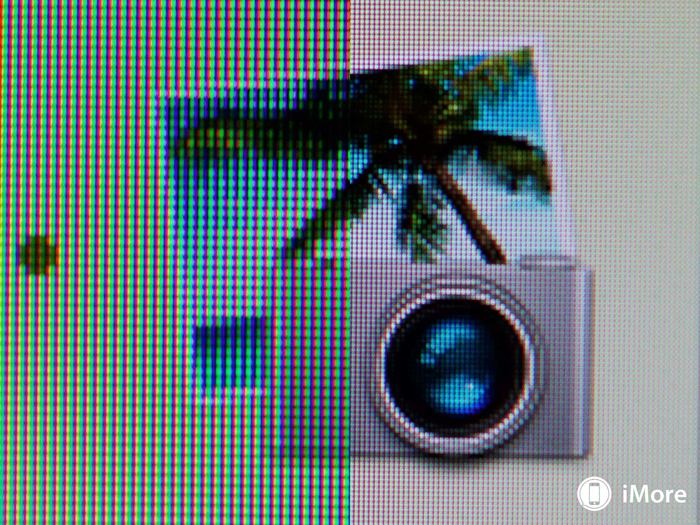Какие браузеры популярны?
![]()

Макеты (layout)
Fixed design
Резиновый макет
Adaptive design
Responsive design
Стратегии разработки
Graceful Degradation
Это способность сайта продолжать своё функционирование в случае отказа некоторых компонентов.
Особенности
- Гарантированная работа сайта в любом браузере
- Пропадает часть функциональности
- Трудоемкий процесс
Progressive enhancement
Cоздание веб-интерфейса происходит поэтапно, от самого простого к сложному
Особенности
- Гарантированная работа проекта в любом браузере
- Выкатывать новые возможности и изменения раньше
- Увеличение сложности реализации back-end’а
Mobile first
Начинаете проектирование сервиса с мобильной версии
Особенности
- Фокус на самом главном
- Полнофункциональная мобильная версия
- Мобильная версия может хорошо работать в "большом" вебе
- У вас не сразу будет версия для "большого веба
- Подход сложно применим для больших порталов
Responsive web design
Вы делаете одну версию вашего веб-проекта для всех устройств с любым размером экранахорошая книга
Особенности
- Одна версия сайта
- Преемственность интерфейса
- Неоптимальное использование возможностей всех устройств
- Возрастают требования к проработке интерфейса и дизайна
Responsive Patterns
Mostly Fluid

Column Drop

Layout shifter

Tiny Tweaks

Off Canvas

Инструменты
Two viewports


Какая ширина layout viewport?
Safari/Chrome/Opera = 980px
Meta–тэг viewport
<meta name="viewport" content="width=device-width">


Другие значения
<meta name="viewport" content="width=device-width, initial-scale=1.0">
<meta name="viewport" content="width=device-width, initial-scale=1.0
maximum-scale=1.0, user-scalable=no">
@viewport
@viewport {//@-ms-viewport
width: auto; // auto | device-width | length | %
max-width: auto;
min-width: auto;
zoom: auto; // auto | number | %
max-zoom: 5; // Largest allowed zoom factor.
min-zoom: 0.25; // Smallest allowed zoom factor.
user-zoom: zoom; // fixed | zoom
orientation: auto; // auto | portrait | landscape
}iPhone X
fit-cover
<meta
name='viewport'
content='initial-scale=1, viewport-fit=cover'>

Safe Areas

Safe Areas
.post {
padding: 12px;
padding-left: env(safe-area-inset-left);
padding-right: env(safe-area-inset-right);
}
Max
.post {
padding-left: max(12px, env(safe-area-inset-left));
padding-right: max(12px, env(safe-area-inset-right));
}Но...
Support
@supports(padding: max(0px)) {
.post {
padding-left: max(12px, env(safe-area-inset-left));
padding-right: max(12px, env(safe-area-inset-right));
}
}section {
float: left;
}
@supports (display: -webkit-flex) or
(display: -moz-flex) or
(display: flex) {
section {
display: -webkit-flex;
display: -moz-flex;
display: flex;
float: none;
}
}JS
var supportsFlex = CSS.supports("display", "flex");
@media
@media [not|only] mediatype [and (media feature)] {
CSS-Code;
}Media queries - позволяет указать тип устройства, для которого будет применяться указанный стиль.
Минимум
@media {
a {
color: red;
}
}Media types
- all – все устройства(по-умолчанию)
- print – принтеры и режим "Print preview"
- screen – все утройства не print и не speech
- speech – скринридеры
Версия для печати
body {
color: red
}
@media print {
body {
color: blue
}
}Для печати или экранов
@media print, screen {
body {
color: blue
}
}media features
– задают технические характеристики устройства, на котором отображается документ.
Ширина
@media (min-width:600px) {
aside {
float: left;
width: 300px;
margin: 10px;
}
}@media (max-width:600px) {
aside {
float: none;
color: blue;
}
}Интервал
h1 {
font-size: 50px;
}
@media (min-width:400px) and (max-width:600px) {
h1 {
font-size: 20px;
color: red;
}
}Интервалы
h1 {
font-size: 50px;
}
@media (min-width:600px), (max-width:400px) {
h1 {
font-size: 20px;
color: red;
}
}Ориентация
//landscape | portrait
@media (orientation: landscape) {
body {
color: red;
}
}Pixel ratio
.selector {
background: url(../apple.png) no-repeat;
}
@media (min-device-pixel-ratio: 2) {
.selector {
background-image: url(../apple@2x.png);
background-size: cover;
}
}

resolution
@media (min-device-pixel-ratio:2),
//dpi (dots per inch) - точек на дюйм
//для экранов 1DPI = 1PPI
(min-resolution: 192dpi),
//dppx (dots per pixel) - точек на пиксель
(min-resolution: 2dppx) { ... }Остальные media features
- min-height, max-height
- grid – устройство с фиксированным размером символов
- min-resolution, max-resolution
- display-mode: [fullscreen | standalone | minimal-ui | browser]
- color (min-color, max-color)
Отрицание
@media not all and (monochrome) { ... }@media not (all and (monochrome)) { ... }@media (not all) and (monochrome) { ... }Но
@media not screen and (color), print and (color) { ... }@media (not (screen and (color))), print and (color) { ... }Аттрибут media
<link rel="stylesheet" media="(max-width: 640px)" href="max-640px.css">
<link rel="stylesheet" media="(min-width: 640px)" href="min-640px.css">
<link rel="stylesheet" media="(orientation: portrait)" href="portrait.css">
<link rel="stylesheet" media="(orientation: landscape)" href="landscape.css">
Перерыв
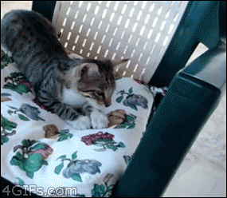Практика
Автоопределение телефонов
+73191111110
Автоопределение телефонов
<head> </head>Позвонить
input
<input type="...">
button, checkbox, color, date, datetime-local, email, file, hidden, image, month, number, password, number, radio, range, reset, search, submit, tel, text, time, url, week
url
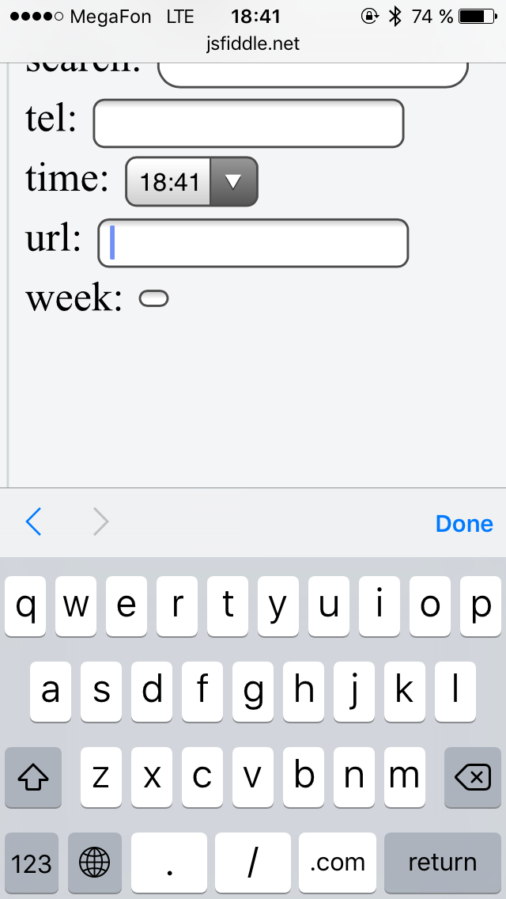number
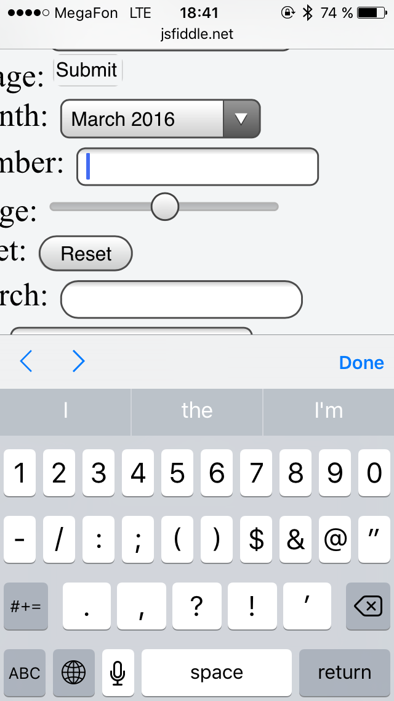tel
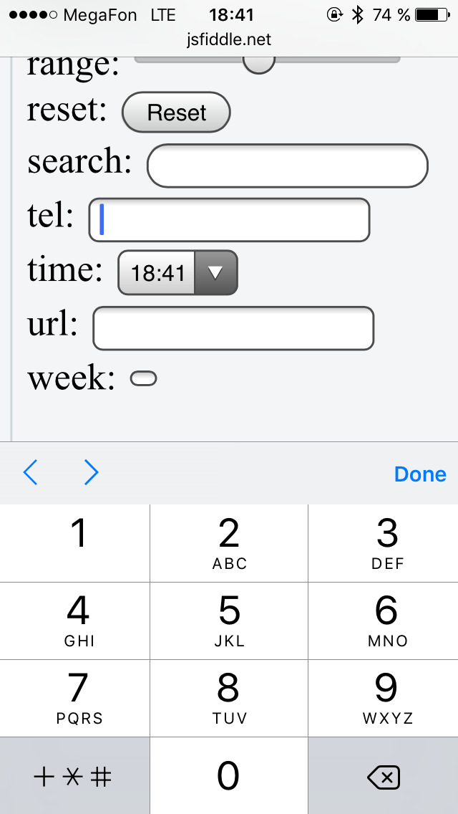date
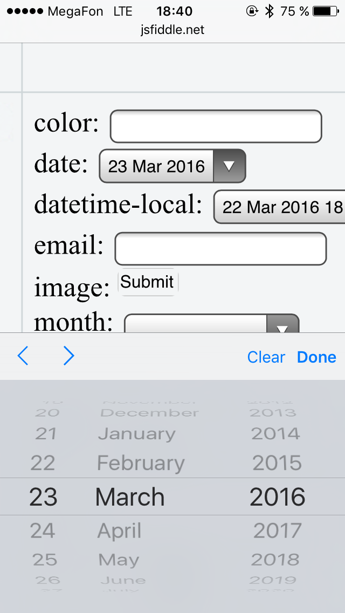datetime-local
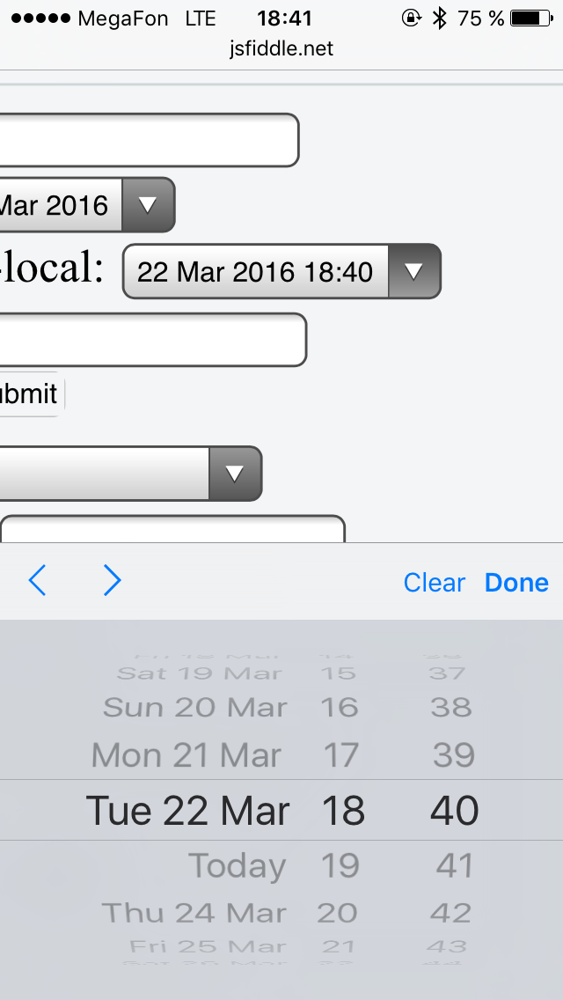month
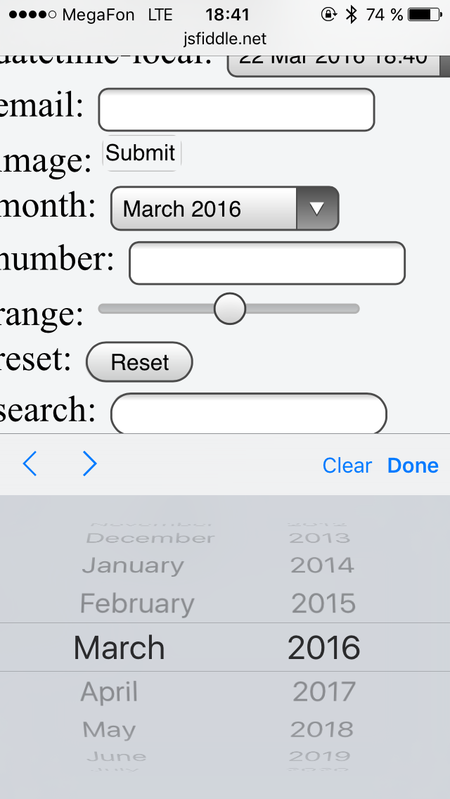time
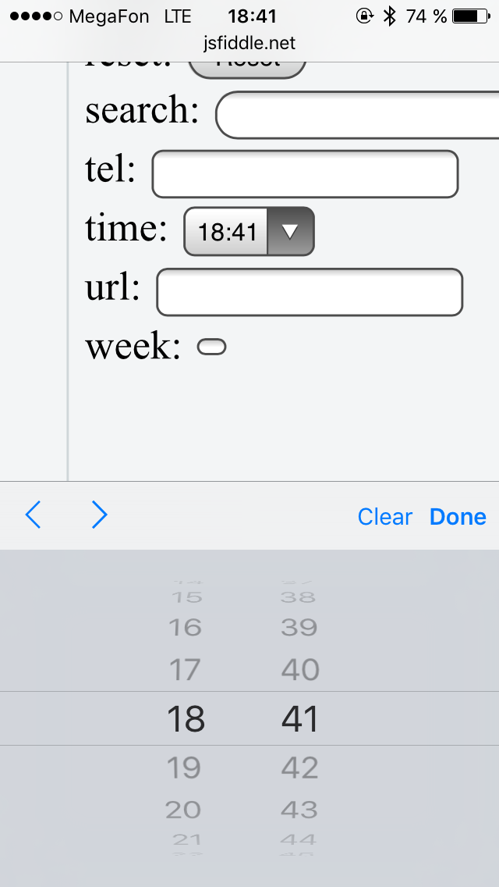input
Подсветка элемента
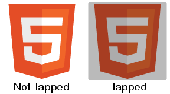-webkit-tap-highlight-color
Устанавливает цвет подсветки ссылки или любого кликабельного элемента
.wrapper {
–webkit-tap-highlight-color: transparent
}
-webkit-appearance
Изменяет внешний вид кнопок и других элементов управления, чтобы походить на стандартные средства управления.
.element {
–webkit-appearance: none | button | radio | ...;
}
-webkit-overflow-scrolling
.element {
-webkit-overflow-scrolling: touch;
}
Ретина
1. Всегда x2

2. media-queries
.logo {
background: url(image.png);
}
@media screen and (device-pixel-ratio: 2) {
.logo {
background: url(image-x2.png);
}
}
3. Вектор
.logo {
background: url(logo.svg);
background-size: 100px 60px;
}
4. «Стандартный»
4.1. image-set
.logo {
background-image: image-set(
"logo.png" 1x,
"logo-2x.png" 2x,
"logo-print.png" 600dpi);
}4.2. srcset


4.3. <picture>
JavaScript на touch-устройствах
Почему веб-приложения на мобильных платформах работают медленно
Особенности
- Нет мышки
- Есть события «на пальцах»
- Есть события с девайсом
HAMMER.JS
– библиотека, которая помогает обработывать события, созданные при помощи мышки или touch
Чем пользуемся мы?
i-ua.js
Своего рода modernizr. Навешивает необходимые классы на body
.i-ua_svg_ yes/no.i-ua_platform_ ios/android/wp/opera/bada/other.i-ua_orientation_ portrait/landscape.i-ua_size_ small/normal/big
i-scroll5
iScroll is a high performance, small footprint, dependency free, multi-platform javascript scroller.
Как тестировать?
- Dev-tools
- Подключение девайса и инспектинг (iOS, Android)
- Эмуляторы: iOS (XCode), Android, Opera Emulator
- Но лучше всего
Что есть еще?
AMP ⚡
Google – Accelerated Mobile Pages.
Технология ускоренных мобильных страниц
Оптимизации AMP
- Заданы размеры картинкам, iframe, etc…
- Приоритетная загрузка ресурсов
- CSS только инлайновый и ограничен 50 Кб
- Эффективная загрузка шрифтов
- Анимация только с аппаратным ускорением
Из чего состоит AMP?
- AMP HTML
- AMP JS
- Google AMP Cache
AMP HTML
<!doctype html>
<html ⚡>
<head>
<title> Hello World</title>
<meta charset="utf-8">
<meta name="viewport" content="width=device-width,minimum-scale=1,initial-scale=1">
<link rel="canonical" href="https://your.websit.ru/original-page">
<style amp-boilerplate>body{-webkit-animation:-amp-start 8s steps
<script async src="https://cdn.ampproject.org/v0.js"></script>
</head>
<body>Hello AMP!</body>
</html>
Связь основной и AMP версии
На AMP странице:
<link rel="canonical" href="hello.html">На основной странице:
<link rel="amphtml" href="hello.html">amp-img
<amp-img
src="/img/Border_Collie.jpg"
alt="Picture of a dog"
title="Picture of a dog, view in lightbox"
layout="responsive"
width="300"
height="246">
AMP JS
- Пользовательские скрипты запрещены
- Только асинхронные AMP скрипты
Валидация
- Консоль браузера
- validator.ampproject.org
- Расширение для браузера
- npm amphtml-validator
Компоненты
- Ads & Analytics
- Dynamic Content
- Layout
- Media
- Presentation
- Social
Загрузка без кэша 2G
| Обычная версия | AMP | |
|---|---|---|
| Количество запросов | 55 | 21 |
| Размер | 835 КБ | 253 КБ |
| Время загрузки | 15.42 сек | 1.6 сек |
Турбо-страницы
Быстрый старт
- Создайте RSS-канал страниц вашего сайта
- В Яндекс.Вебмастере загрузите RSS-канал
- Проверьте первые 10 страниц.
- Обновляйте содержимое Турбо-страниц, просто изменяя RSS-канал.
Пример RSS
<rss
xmlns:yandex="http://news.yandex.ru"
xmlns:media="http://search.yahoo.com/mrss/"
xmlns:turbo="http://turbo.yandex.ru"
version="2.0"
>
<channel>
<item turbo="true">
<link>http://www.example.com/page1.html</link>
<turbo:content>
<![CDATA[
<header><h1>Заголовок страницы</h1></header>
]]>
</turbo:content>
</item>
</channel>
</rss>
Профит
- Страницы быстрее загружаются
- Снижается нагрузка на ваш сервер
- Страницы создаются по алгоритмам Яндекса
- Изменения страниц отслеживаются автоматически
- Остается возможность сбора статистики
- Поддерживается использование рекламы
Что есть еще?
Instant View

– моментальный просмотр блогов, новостей, статей прямо в telegram
Как это работает?

Как создать шаблон?
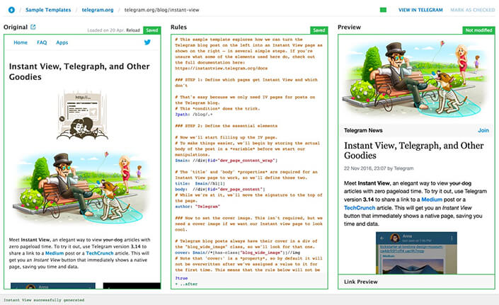Instant Article
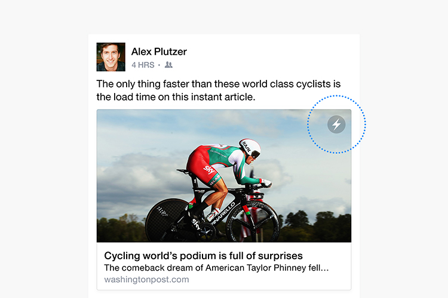– функция социальной сети Facebook, позволяющая просматривать материалы интернет-изданий в мобильном приложении Facebook без перехода на внешнюю веб-страницу ресурса